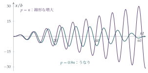

STEP II 1991、第12問
先に進む前に問題を読んでおこう。問題は STEP Support Programme の問題データベースにある： step.maths.org/questions/91-s2-q12
導入
ブランコに乗った子どもをちょうどよいタイミングで押すと、小さな一押しが積み重なって大きな揺れになる。リズムを外して押しても、たいしたことは起こらない。振動する系にはどれも固有振動数（natural frequency）があり、その振動数で系を駆動すると、加えた力とは釣り合わないほど大きな応答が生じる。これが共振（resonance）である。歌手がワイングラスを割ることができるのも、兵士が橋を渡るときに歩調を乱すのも、ラジオが何千もの放送局の中から一つを選び出せるのも、これが理由である。
この問題では、弾性ひもの上端を揺らし、ひもがたるまずに張ったままでいるのはどのようなときかを問う。答えには因子 \(\frac{1}{n - p}\) が含まれ、駆動振動数 \(p\) が固有振動数 \(n\) に近づくと、この因子は限りなく大きくなる。共振の近くでは、ゆるやかに揺らすだけでひもがたるんでしまうのである。
取りかかる前に
質点は伸び（extension）\(c\) で平衡（equilibrium）の状態にぶら下がっている。ひもの弾性率（modulus）を \(\lambda\) とするとき、\(\lambda\)、\(a\)、\(c\)、\(m\)、\(g\) の間にはどのような関係があるか。上端が \(b\sin pt\) だけ下がり、質点が \(x\) だけ下がったとき、伸びはいくらか。
平衡状態では張力（tension）と重力が等しい：\(\frac{\lambda c}{a} = mg\)。上端が \(b\sin pt\) だけ下に変位し、質点が \(x\) だけ下に変位すると、ひもの長さは \(x - b\sin pt\) だけ増えるので、伸びは \(c + x - b\sin pt\) である。
順を追って解く
段階 1 運動方程式
下向きを正とすると、質点にはたらく力は重力 \(mg\) と、上向きの張力 \(\frac{\lambda}{a}(c + x - b\sin pt)\) である。\(\frac{\lambda c}{a} = mg\) を用いると、 \[m\ddot x = mg - \frac{\lambda}{a}(c + x - b\sin pt) = -\frac{\lambda}{a}(x - b\sin pt),\] となる。\(\frac{\lambda}{ma} = \frac{g}{c} = n^2\) であるから、これは \(\ddot x = -n^2(x - b\sin pt)\) である。■
質点は、動く点 \(b\sin pt\) に向かってばねのような力で引かれている。駆動がなければ、質点は角振動数（angular frequency）\(n\)、すなわち固有振動数で振動する。
段階 2 解を求める
方程式は \(\ddot x + n^2x = n^2b\sin pt\) である。\(x = C\sin pt\) の形の特解（particular solution）を試してみよ。次に \(\ddot x + n^2x = 0\) の一般解（general solution）を加えよ。質点はどのような初期条件を満たすか。
\(x = C\sin pt\) を代入すると \((-p^2 + n^2)C = n^2b\) となるので、\(C = \frac{n^2b}{n^2 - p^2}\) である（\(p \neq n\) が必要）。余関数（complementary function）は \(D\cos nt + E\sin nt\) である。質点は平衡位置で静止した状態から動き始める。\(x(0) = 0\) から \(D = 0\) が従い、\(\dot x(0) = 0\) から \(Cp + En = 0\) が得られるので、\(E = -\frac{nbp}{n^2 - p^2}\) である。以上をまとめると、 \[x(t) = \frac{bn}{n^2 - p^2}(n\sin pt - p\sin nt). \qed\]
段階 3 張ったままでいる条件
ひもが張っているのは、伸びが正であるときであり、またそのときに限る。伸び \(c + x - b\sin pt\) を \(t\) で表せ。
\(x(t)\) から \(b\sin pt\) を引くと、 \[\begin{aligned} x - b\sin pt &= \frac{b}{n^2 - p^2}\bigl(n^2\sin pt - np\sin nt - (n^2 - p^2)\sin pt\bigr) \\ &= \frac{bp}{n^2 - p^2}(p\sin pt - n\sin nt). \end{aligned}\] したがって、ひもが常に張ったままでいるための必要十分条件は \[c + \frac{bp}{n^2 - p^2}(p\sin pt - n\sin nt) \geq 0 \qquad\text{すべての } t \geq 0.\] である。
\(p\sin pt - n\sin nt\) はどこまで小さな負の値をとりうるか。
\(|\sin| \leq 1\) であるから、\(p\sin pt - n\sin nt \geq -(p + n)\) が成り立つ。よって伸びは少なくとも \[c - \frac{bp(n + p)}{n^2 - p^2} = c - \frac{bp}{n - p},\] であり、\(pb < (n - p)c\) ならばこれは正である。■
\(p\) が \(n\) に近づくと、この条件はどうなるか。\(p = 0.9n\) のとき、揺らす振幅 \(b\) はどれほど小さくなければならないか。\(p = 0.99n\) のときはどうか。
振り返り
平衡位置から測る。平衡状態での伸び \(c\) を用いることで、方程式から重力が消えた。
特解と余関数の和。振動数 \(p\) の強制応答と振動数 \(n\) の自由振動を足し合わせ、定数は初期条件から定めた。
解かずに評価する。伸びの最小値を正確に求めたわけではない。十分条件（sufficient condition）を得るには、正弦についての大まかな評価で足りた。
背後にある数学
共振の極限
解において \(p \to n\) とする。分子も分母も \(0\) に近づくが、極限の計算（あるいは \(p\) について微分するロピタルの定理（l’Hôpital’s rule））により \[x(t) \to \frac{b}{2}(\sin nt - nt\cos nt).\] が得られる。項 \(nt\cos nt\) は限りなく大きくなる。ちょうど固有振動数で駆動すると、振幅は時間に比例して増加する。一押しごとに、運動と歩調を合わせて揺れが加算されていくからである。共振より少し下では、二つの振動数の位相が合ったりずれたりを繰り返し、うなり（beats）が生じる。振幅は遅い振動数 \(n - p\) で膨らんではしぼむ（図 11.1.1）。ほとんど調弦の合った二本のギターの弦を鳴らしたときにも、同じうなりが聞こえる。

減衰と共振曲線
現実の系は摩擦や空気抵抗によってエネルギーを失い、それが振幅の増大を抑える。減衰（damping）があると、振動数 \(p\) の駆動力に対する定常応答の振幅は固有振動数の近くで最大になる。ピークが鋭いほど、減衰は小さい。技術者はこれをQ値（quality factor）\(Q\) で表す。大まかに言えば、系がエネルギーの大部分を失うまでに行う振動の回数である。ワイングラスの \(Q\) は数千にもなるので、ちょうど固有振動数の音を持続させるとグラスが割れることがある。自動車のサスペンションには意図的に低い \(Q\) が与えられており、段差を越えても車体が弾み続けないようになっている。
1831年、マンチェスター近郊のブロートン吊り橋を歩調をそろえて行進する兵士の隊列が橋を振動させ、ついには崩落させた。それ以来、軍隊は橋の上では歩調を乱すよう命じられている。2000年6月に開通したロンドンのミレニアム・ブリッジは、群衆が渡り始めるとすぐに横揺れを始めた。歩行者が無意識のうちに揺れに合わせて歩調を調整し、揺れと同じ位相でエネルギーを供給してしまったのである。橋は閉鎖され、ダンパーを取り付けるのに2年を要した。1940年のタコマナローズ橋の有名な崩落はしばしば共振として説明されるが、実際には別の現象、すなわち空力弾性フラッター（aeroelastic flutter）であった。これは、風の力が橋自身の運動に依存する現象である。その解析には、自励振動（self-excited oscillation）とリミットサイクル（limit cycle）の考え方が必要になる（第 8.4 節）。
思考のスキル
周期的な力で駆動される線形方程式の解は、駆動振動数での応答と、初期条件に合うように選んだ固有振動数での自由振動との和である。
これがうまくいくのは線形性（linearity）のおかげであり、解どうしを足し合わせることができる。大学では、同じ原理を多数の駆動振動数の和に適用することで、フーリエ解析（Fourier analysis）、工学における伝達関数（transfer function）、物理学におけるグリーン関数（Green’s function）へとつながっていく。
次の一歩
落下するエレベーター。STEP II 1996、第11問 に挑戦してみよ。エレベーターの中で弾性ひもにつるされたおもりを扱う問題で、エレベーターは加速を始め、その後加速をやめる。最終的な振幅が、加速の続く時間によってどのように変わるかに注目せよ。
共振するとき。\(x(0) = \dot x(0) = 0\) のもとで \(\ddot x + n^2x = n^2b\sin nt\) を、特解 \(x = Ct\cos nt\) を試すことで直接解け。それが上の極限と一致することを確かめよ。
うなり。\(n\sin pt - p\sin nt\) が二つの項の和として書け、\(p\) が \(n\) に近いとき、そのうち一方がおよそ \(2n\cos\frac{(n+p)t}{2}\sin\frac{(p-n)t}{2}\) になることを示せ。それを用いて、うなりの周期が \(\frac{2\pi}{n - p}\) となることを説明せよ。
減衰のある共振。小さな \(k > 0\) に対して \(\ddot x + 2k\dot x + n^2x = F\cos pt\) の定常状態（steady state）の振幅を求め、それが \(p^2 = n^2 - 2k^2\) のときに最大となることを示せ。
さらに学ぶために
A. P. French, Vibrations and Waves（MIT Introductory Physics Series）。『振動と波動』。強制振動と共振を扱った第4章は、この題材の古典的な解説である。
Steven Strogatz, Sync（Penguin）。『同期』。ホタルからミレニアム・ブリッジまで、ものごとがどのようにして歩調をそろえるのかを描く。
Henry Petroski, To Engineer Is Human（Vintage）。『人はだれでもエンジニア』。歴史のコラムで取り上げた橋を含む、工学上の失敗を扱っている。